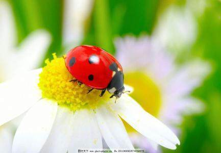

昆虫故事之甲虫的故事
作者：百家
小时候，我们经常会看见一种圆溜溜的小虫子在空中飞着或在地上歇着，显得很轻巧，也很安静。它们的身子只有一粒黄豆那么大，半圆形，状如一个倒扣着的袖珍小碗，所以我们都叫它木碗虫。它们的翅膀坚硬光滑，淡黄或深红的底色，左右两侧各有三个黑点，接合处靠近颈部的地方有一个更大的黑点，如同七颗黑亮的小星星，因此它们又叫七星瓢虫，还有叫花大姐、花大娘的，显然，这些命名都是源自于它们独特的、美丽的外表。至今还记得小学语文课本里的一段话：七星瓢虫爱吃蚜虫。赤眼蜂能消灭螟虫。七星瓢虫和赤眼蜂也是庄稼的好朋友。但我们喜欢七星瓢虫，并非因为它们是庄稼的好朋友，事实上，我们从来没有见过它们吃蚜虫，甚至都不知道蚜虫长什么样子。我们喜欢看到它们展开小巧的翅膀在空中缓慢飞行，喜欢看到它们静静地停落在叶子上、石头上和我们的身上，喜欢它们身上那七颗独一无二的星宿。它们总是不慌不忙、慢慢悠悠的，以至于很容易就能逮到一只两只，但即使被逮到了它们也还是不慌不忙，不叫唤，也不挣扎，依旧快乐地晃动着触角，好像它们确信不会有危险似的。的确，我们很快就会放了它们，然后看着它们慢慢飞走。谁愿意伤害这些穿着漂亮衣服的、文文静静的小姑娘呢？传说七星瓢虫很爱家，看到它们的时候，你只需说：花大娘，花大娘，你家房子着火了，你的孩子要睡觉了，等等之类家里有急事的话，它们马上就会飞回家去了。我没有试过，但我宁愿相信这个美丽的传说是真的。直到最近我才知道，这种秀气、温婉的小虫儿，竟然是甲虫家族的一员。它和我们通常印象中那种强悍有力的甲虫，比如天牛、蜣螂之类，实在是相差太远啦！
下面我就接着说说天牛吧。我们称天牛为青牛郎，一直这么叫，也不知是什么原因。和七星瓢虫截然不同，天牛长得五大三粗，威猛有力。它们的身子呈圆柱形，常见的体色有黑、黄和钢蓝，上面散布有白色的斑点或条纹。腿脚有力，铠甲坚固，上腭和下巴都很强壮。头上一对长而硬的触角，比它们的身子还长。在我的记忆中，天牛多出现在夏秋两季，而且只喜欢呆在树上，特别是核桃树、梨树和白杨树，偶尔飞行，多限于从这棵树飞到那那棵树。听说天牛是十足的害虫，我们也看见过它们在树干上钻出的洞，但从来没有一棵树死在它们手下，所以我们也不恨它们，也不想消灭它们。在照壁山上，许多被世人公认的害虫都没有给我们造成多大的损害，因而总能得到村民们的宽恕和容忍，并得以保全种族、自由生活。事实上，我们还有点喜欢天牛，但又有点怕它们。我们喜欢它们威风凛凛的样子，喜欢它们光亮的盔甲，喜欢它们强劲有力的飞行。有时候，我们真想逮一两头天牛来玩，越大越壮的越想要，特别是黄底白斑、足有拇指粗那种。但心里又挺害怕的，因为它们不象七星瓢虫那样小巧玲珑、温柔可人，它们全副武装，力大如牛（我们觉得），尤其是那两扇如镰刀般锋利的嘴巴，还有令人心悸的“吱吱”声，每每令我们望而却步，最后只能站在树下“望牛兴叹”。不过这样也好，如果天牛乖乖地做了我们的俘虏和玩具，它们威猛健美的形象必然大打折扣，因此也就不那么美好了，不那么好玩了。

评论：############